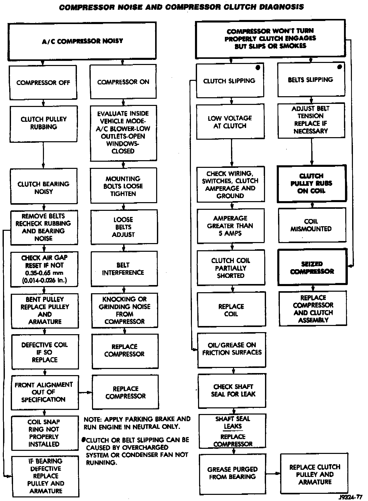

Operation CHARM
: Car repair manuals for everyone.
Русский
Home
>>
Jeep
>>
1997
>>
Grand Cherokee 4WD L6-4.0L VIN S
>>
Repair and Diagnosis
>>
Heating and Air Conditioning
>>
Testing and Inspection
>>
Component Tests and General Diagnostics
>>
Component Tests
>>
Compressor Noise and Compressor Clutch Diagnosis
Compressor Noise and Compressor Clutch Diagnosis
Compressor Noise And Compressor Clutch Diagnosis:
